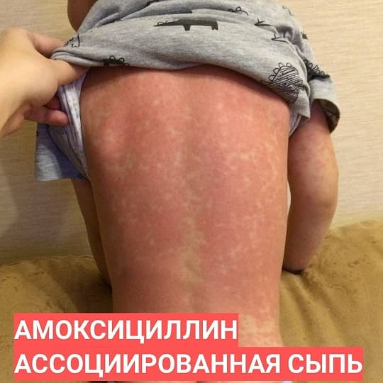
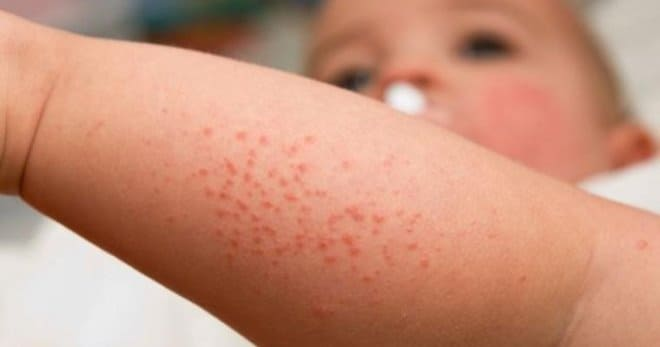

Дорогие родители, вы, наверное, слышали, что когда дети принимают антибиотики, у них могут развиваться побочные эффекты? Самым частым побочным эффектом является диарея, но есть и другие. Например, многие антибиотики способны провоцировать сыпь, и чаще всего это бывает при приеме амоксициллина.

Примерно 10 % людей сообщают врачу, что имеют аллергию на пенициллин. Однако этот процент, скорее всего, завышен. Люди часто принимают за аллергию на пенициллины то, что таковой не является. Например, при детской розеоле ребенка лихорадит 3–5 дней, затем лихорадка спадает и через сутки появляется сыпь – это обычное течение данной инфекции . И если до снижения лихорадки успеть дать антибиотик, то родители, а нередко и врач, могут связать появление сыпи с аллергией, но это ошибка.
Хотя амоксициллин-ассоциированная сыпь является прямым следствием приема антибиотика, эта сыпь все же не аллергическая. А значит, она вряд ли повторится, если дать этот же антибиотик ребенку повторно, при другой болезни.
Следует учитывать, что истинная аллергия на пенициллины тоже встречается, и не так уж редко. Так как же не спутать аллергию на пенициллин с амоксициллин-ассоциированной сыпью? В этом поможет характеристика сыпи и время ее появления.
Аллергия обычно развивается в виде крапивницы. Крапивница – очень типичная и узнаваемая сыпь, элементы которой похожи на ожог крапивой или укусы мошек: они приподняты над уровнем здоровой кожи, горячие, зудят, появляются практически сразу после принятия первых доз антибиотика.

Один конкретный элемент сыпи не держится более суток, а в типичной ситуации – пропадает уже через 20 минут без всякого следа, но почти сразу снова появляется, уже на другом месте. Крапивница обычно сопровождается очень интенсивным зудом, это главная жалоба самого пациента.
Амоксициллин-ассоциированная сыпь обычно проявляется в виде пятен или приподнятых над здоровой кожей элементов, и больше всего напоминает корь. Эта сыпь появляется позже, чем крапивница, обычно спустя 3-10 дней от приемав первой дозы антибиотика. Амоксициллиновая сыпь представляет собой яркие красные сливные пятна и бугорки на коже. Зуда при этой сыпи почти нет.
При любом виде сыпи на антибиотик следует срочно связаться со своим врачом и показать ребенка ему в срок, который он сочтет необходимым.
Если вы обнаружили у ребенка крапивницу после приема амоксициллина, вы должны немедленно обратиться к врачу, так как аллергическая реакция может усугубиться. Не давайте ребенку следующую дозу антибиотика, не посоветовавшись с врачом. Срочно звоните в скорую помощь, если ребенок испытывает затрудненное дыхание, у него спутано сознание или начались отеки на голове и шее.
Особенно часто амоксициллин-ассоциированная сыпь развивается, когда этим препаратом по ошибке лечат инфекционный мононуклеоз (вирусная инфекция, не требующая антибиотикотерапии в принципе). По данным ряда исследований, если при мононуклеозе назначить пенициллиновые антибиотики, то вероятность развития амоксициллиновой сыпи составляет 80–90 %. Долгое время считалось, что амоксициллиновая сыпь случается только при ВЭБ-инфекции, но позже было обнаружено, что наличие ВЭБ-инфекции является частым, но не обязательным условием.
КАК ЛЕЧИТЬ АМОКСИЦИЛЛИН-АССОЦИИРОВАННУЮ СЫПЬ?
Прежде всего прекратите давать ребенку антибиотик, как только заметили сыпь. Если ребенка беспокоит зуд, можете дать ему антигистаминный препарат (Зодак, Супрастин) в дозе, рекомендованной в инструкции к препарату, еще до визита к врачу.
Амоксициллиновая сыпь сама по себе ничем не опасна, самостоятельно и бесследно проходит в период от нескольких дней до двух недель. Однако амоксициллиновую сыпь легко спутать с аллергией, а вот аллергия может приводить к серьезным осложнениям (отек Квинке на дыхательных путях или анафилактический шок), поэтому родителям нужно быть бдительными, срочно вызвать скорую помощь при нарушениях сознания или дыхания и постараться показать ребенка врачу в короткие сроки повторно даже при отсутствии опасных симптомов.
(Сергей Бутрий "Здоровье ребенка: современный подход")